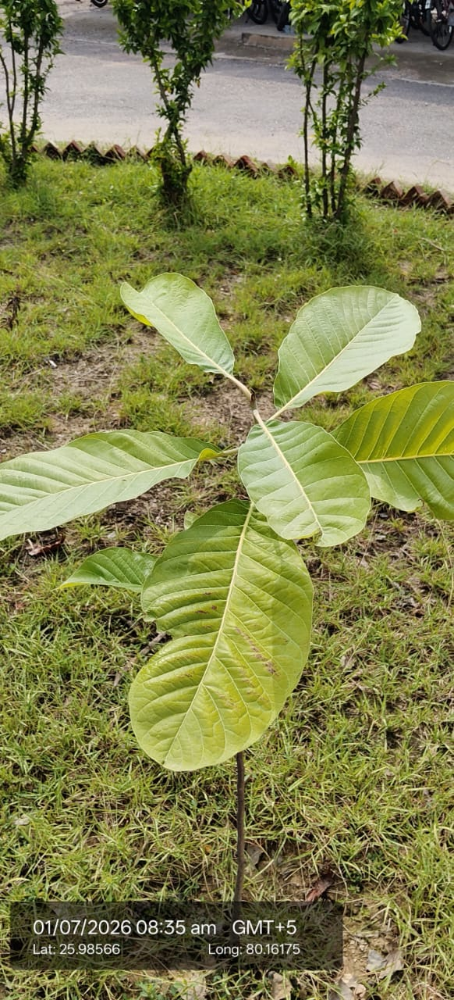

Visual record04 photographs



| Scientific name | Tectona grandis |
|---|---|
| Type | Large deciduous tree, currently a young sapling |
| Category | Trees |
Habitat & Growing Conditions
- Native to India, Myanmar, Thailand, and Laos. Widely planted across UP, including the Kanpur region shown in your coordinates
- Thrives in tropical climate with a distinct dry season. Needs 25-35°C and 1200-2500 mm rainfall, but tolerates dry spells once established
- Prefers full sun. Grows best in deep, fertile, well-drained alluvial or loamy soil. Doesn’t tolerate waterlogging or heavy clay
- Found in moist and dry deciduous forests. Commonly planted along roadsides, farm boundaries, parks, and plantations as seen in your photo
- Deciduous - sheds leaves in dry season, March-April. New leaves flush before monsoon
Economic Importance
- Timber: One of the world’s most valuable hardwoods. Teak wood is strong, durable, weather and termite resistant. Used for furniture, shipbuilding, doors, windows, flooring, and carvings. Major export commodity for India
- Forestry & livelihood: Large-scale teak plantations provide income to farmers and forest departments. UP Forest Dept and farmers grow it as a long-term investment
- Environmental: Planted for afforestation, carbon sequestration, and soil conservation. Large canopy provides shade
Medicinal Importance
- In Ayurveda, bark and leaves used for urinary disorders, diabetes, and skin diseases. Oil from seeds used for hair and eczema. Note: Consult a healthcare professional before any medicinal use
Field Notes
- Leaves used as plates and for wrapping food in some regions. Sawdust used as incense. Flowers yield a yellow dye